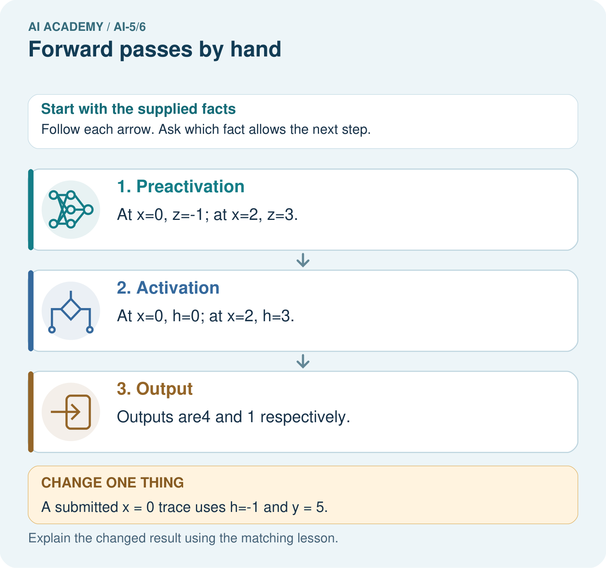

AI Academy · Level 5 · Grade 10 · Week 6 · Teacher guide
Forward passes by hand
Learn to understand, design, build, test and explain AI systems responsibly.
Project: Image-pattern Network Investigation
Teacher guide · 1 of 6
Prepare the purpose, prerequisites and materials
Teach the learning cycle
Primary target: Record scores and activations in dependency order
| Session | Sequence and minutes | Resources |
|---|---|---|
| Session 1 · Understand · 45 min | 0–7: recall and prerequisite; 7–15: inspect the concrete case and predict; 15–30: teacher models the worked trace; 30–40: learners explain a step using the text and visual; 40–45: check the core idea. | Sections 1–6; record the brief recall in the workbook. |
| Session 2 · Practise · 45 min | 0–5: retrieve the procedure; 5–15: W2 completion practice; 15–23: explain and check with a partner; 23–30: each learner answers the misconception check; 30–40: targeted reteaching or a harder variation; 40–45: prepare the investigation. | Sections 7–10; use the matching workbook W2 and misconception check. |
| Session 3 · Investigate and transfer · 45 min | 0–5: retrieve the decision rule; 5–20: investigate or trace; 20–30: start the independent case; 30–38: connect the project; 38–43: act on feedback; 43–45: plan the return check. | Sections 9 and 11–14. Give extra time to finish the full task set; use Section 15 when the week includes a coding lab. |
This is a starting allocation of 135 minutes, not a validated duration. Preserve all named topics. Schedule extra time for connected examples, the full investigation, independent cases and project building. Repeated copies of a case share one recorded attempt; they are not new evidence.
Retrieval answer guidance
Composing layers
Without opening the old lesson, explain one key idea from Composing layers. Give an example and a mistake that the idea helps you avoid.
Look for: Trace how one layer supplies the next layer inputs
Reference example, not the only acceptable wording: Teacher explanation: Scores are -2 and 2; activations are 0 and 2; y = 0 - 2 + 1 = -1.
Bias terms and decision boundaries
Without opening the old lesson, explain one key idea from Bias terms and decision boundaries. Give an example and a mistake that the idea helps you avoid.
Look for: Calculate a weighted score with a bias term
Reference example, not the only acceptable wording: Teacher explanation: Weighted sum 10 - 4 = 6; bias -3; score 3; prediction 1. Add the bias once after summing.
Use two 45-minute sessions to build a habit of recording intermediate values. Students should identify the first disagreement, then propagate the correction. Do not award full credit for a correct final value supported by an incorrect trace.
Outcomes
Record scores and activations in dependency order
Locate the first incorrect value in a forward trace
Separate a final output from evidence of model accuracy
Preparation
Printed lesson and workbook; paper and pencil
Calculator and optional local Python 3 editor; no packages or AI accounts needed
Use the fictional examples supplied; prepare the fresh retry before class
Prerequisite answer
It receives the ordered hidden activation vector, rather than the original input or the scores before activation.
End goal for the pictorial case
By the end, I can explain forward passes by hand using a traced example and a stated limitation.
This added worked case illustrates the week’s main idea. Retain all original and connected topics; schedule its practice within the teaching cycle.
Teacher guide · 2 of 6
Explain and model the mechanism
Use a new one-input network with two hidden units. Its scores are z1 = 2x - 1 and z2 = -x + 2. Apply ReLU to obtain h1 and h2. The output is y = h1 - 2h2 + 1. Parameters stay fixed while the input changes. The input x is an abstract number; these are arithmetic examples, not measurements of children.
A forward pass evaluates this network in dependency order. Compute both scores from x, then both activations, then the output contributions h1 and -2h2, and finally add bias 1. A trace table makes an omitted bias or a sign error easier to locate than a final answer alone.
At x = 1 the output is exactly zero. If we later declare class 1 for y >= 0, equality belongs to class 1. Applying ReLU in the hidden layer does not make the final output nonnegative.
For x = 0, the first score is -1, which ReLU changes to 0. The second score is 2, which ReLU leaves at 2. Therefore y = 0 - 4 + 1 = -3. Negative output is allowed because this output layer uses identity.
This optional Python uses only numeric inputs. Compare every returned component against the table. The same code being run twice is a repeatability check; comparing it with a separately calculated expectation is a stronger check of correctness.
| Term | Meaning |
|---|---|
| Trace | A record of intermediate values in a computation |
| Preactivation | A weighted score before an activation function |
| Dependency | An earlier value needed to compute a later value |
| Regression check | A retained test rerun after a change to detect a new error |
Correct a trace from the earliest error
Guided: x = 2 gives z = [3, 0], h = [3, 0], y = 4; the zero score remains zero. Exit: no; final agreement can hide compensating errors. Retain correct intermediate expectations and varied regression cases, not only the single final output.
Model the reasoning aloud
Use the complete worked example below before asking learners to complete W2. Reveal a small part, invite a prediction, then explain the deciding step. These teacher notes contain solutions; do not reveal the independent case answer during modelling.
Correct a trace from the earliest error
| Thinking move | Teacher prompt |
|---|---|
| Plan | What is given? What is the question? Which procedure fits these facts? |
| Do | Point to each input and intermediate step in the worked trace. Name the rule that allows the next step. |
| Check | Does the output answer the question? Which assumption or limitation prevents a larger claim? |
Use the diagram and verbal explanation together. Ask learners to match a sentence to a specific visual step; do not assign learners fixed visual or auditory learning styles.
A pictorial worked case: Forward passes by hand
Audit a forward pass by writing every value at its correct stage.
The facts we will use
Toy scalar network z=2x-1, h=ReLU(z), y=-h+4. Trace x=0 and x=2.
All inputs and outcomes in this worked example are invented classroom data; no real model run is claimed.

Read the picture one step at a time
Why this result follows
A forward pass applies a fixed network to an input; it does not update weights. Keep the preactivation z, activated value h and final output y in separate trace columns. For zero, ReLU changes minus one to zero. Using the earlier minus one in the output layer is the first error, even if later arithmetic follows that mistaken value correctly.
What this example does not establish
A correct forward trace verifies this declared computation; it does not show that the parameter choices solve a useful task.
Change one thing in the pictured case
Change: A submitted x = 0 trace uses h=-1 and y = 5.
Prediction: Its first error is retaining the negative value after ReLU; correct h = 0 gives y = 4.
Reason: ReLU(-1)=0, so the output must use0, not the earlier preactivation.
Ask while showing the picture
Cover the result. Ask learners to name the inputs and predict the next step. Uncover one step, connect the icon to the actual procedure, and explain its evidence. Then change the supplied condition and compare. The picture is a representation; it does not document execution of a real AI model.
Teacher guide · 3 of 6
Demonstrate and guide practice
| Time or stage | Teacher action |
|---|---|
| Session 1 start to 7 minutes | Retrieve the distinction between scores, hidden activations and output inputs. |
| 7 to 18 minutes | Trace x = 0 on the board. Label every column and identify the output bias. |
| 18 to 32 minutes | Complete W1 and compare the x = 1 and x = 3 worked rows. Discuss negative final outputs. |
| 32 to 45 minutes | Run or trace Python; complete the guided x = 2 case and W2. |
| Session 2 start to 8 minutes | Reconstruct a trace from memory, then check its dependencies against the formula. |
| 8 to 20 minutes | Complete W3 and discuss which cases detect missing activation and which detect order errors. |
| 20 to 35 minutes | Collect W4 independently, including the first erroneous stage and corrected descendants. |
| 35 to 45 minutes | Use W5 and the exit question, then offer the fresh retry after feedback. |
Use the worked example in Sections 3 and 6. Collect a prediction before revealing its result; ask the learner to point to each intermediate fact.
Provide blank trace columns and allow a calculator for signed arithmetic. Extension: show that for 0.5 <= x <= 2 the lesson output is 4x - 4; verify both endpoints without applying that expression outside its stated interval.
Reduce help deliberately
Completion task: At x = 3 a trace gives z = [5, -1], h = [5, 0] and y = 5. Identify the first incorrect stage and repair it.
Teacher check: Teacher explanation: Scores and activations are correct. The output omitted bias 1; y should be 6.
Start by identifying the given inputs together. Leave the intermediate steps blank. If needed, model one step, then withdraw that help on the next step. Move to a full trace only when the partial trace is understood. For partners, alternate explainer and checker; collect a response from every learner before discussion.
Individual reasoning check
Use the worked case for Forward passes by hand. Proposed explanation: “ReLU means the output cannot be negative”. Decide whether this explanation is supported. Point to the step or supplied fact that decides; explain your repair if needed.
Expected correction: Only the hidden scores receive ReLU here. The output formula can be negative.
Collect explanations, not only yes/no votes. If a misunderstanding is common, re-model the relevant step for the class. If it affects a few learners, give a short targeted group explanation while others solve a more demanding variation.
Pictorial practice question
Why should feedback identify h before correcting only y? Point to the relevant step in the picture, then write the changed result and the rule or evidence that supports it.
Reasoned teacher answer
The incorrect output follows from the first unsupported activation step. Repairing h teaches the mechanism and prevents repeating the same error elsewhere. Changed-case check: Its first error is retaining the negative value after ReLU; correct h = 0 gives y = 4. ReLU(-1)=0, so the output must use0, not the earlier preactivation.
Changed-case reasoning: Its first error is retaining the negative value after ReLU; correct h = 0 gives y = 4. ReLU(-1)=0, so the output must use0, not the earlier preactivation.
Collect each learner’s explanation before discussion. Use the first missing connection between input, deciding step and result to choose support. This question is worked-case practice, not fresh mastery evidence.
Teacher guide · 4 of 6
Run the investigation and diagnose misconceptions
ReLU means the output cannot be negative: Only the hidden scores receive ReLU here. The output formula can be negative.
Fix just the final number: Repair the earliest incorrect operation and recompute every dependent value.
One passing case proves the network: Cases with equal activations or positive scores can hide specific defects.
Use Section 9 for the evidence ledger. Add a boundary or missing-input case and record the expected response before checking. More successful repeats of one case do not establish wider coverage.
Match the support to the first error
| What the response shows | Next teaching action |
|---|---|
| Missing or misread facts | Read the case aloud, mark supplied versus unknown facts, and let the learner restate it. |
| Wrong procedure | Return to the deciding step in the worked case. Contrast it with the proposed incorrect explanation. |
| Arithmetic or implementation error | Trace intermediate values or lines; preserve the first mismatch and retry that step. |
| Correct result without a reason | Ask for a trace and a changed case before marking independent understanding. |
| An unsupported wider claim | Ask which supplied evidence supports the claim and which further observation would be needed. |
Offer an oral explanation, drawing, enlarged visual or fewer examples when that removes a reading/writing barrier. Keep the same reasoning goal. Stretch secure learners by changing a boundary or assumption and asking them to defend the effect, not simply by assigning more of the same questions.
Teacher guide · 5 of 6
Assess and explain the answers
Guided and exit questions
Guided: x = 2 gives z = [3, 0], h = [3, 0], y = 4; the zero score remains zero. Exit: no; final agreement can hide compensating errors. Retain correct intermediate expectations and varied regression cases, not only the single final output.
W1 Complete a fresh row
Trace x = -1 through the lesson network. Record z, h and y.
Teacher explanation: z = [-3, 3], h = [0, 3], y = -5.
W2 Locate a bias omission
At x = 3 a trace gives z = [5, -1], h = [5, 0] and y = 5. Identify the first incorrect stage and repair it.
Teacher explanation: Scores and activations are correct. The output omitted bias 1; y should be 6.
W3 Check both boundaries
Trace x = 0.5 and x = 2. Which hidden score is zero in each case?
Teacher explanation: At 0.5, z = [0, 1.5], h = [0, 1.5], y = -2. At 2, z = [3, 0], h = [3, 0], y = 4. Zero maps to zero under ReLU.
W4 Audit a different network independently
Use z1 = x + 1, z2 = 2 - 2x, h = ReLU(z) component by component, and y = 2h1 + h2 - 3. Trace x = 0 and x = 2. A submitted x = 2 trace uses h = [3, -2] and y = 1. Find its first error and correct all later values.
Teacher explanation: At 0: z = [1, 2], h = [1, 2], y = 1. At 2: z = [3, -2], h = [3, 0], y = 3. The first submitted error is h2 = -2 rather than 0; the corrected output is 3.
W5 Limit a passing test
Explain why testing only x = 1 in the lesson model may miss a hidden-order swap.
Teacher explanation: Both hidden values equal 1, so exchanging them changes nothing. Use unequal hidden values, such as x = 0, and compare intermediate values as well as y.
Independent assessment and fresh retry
Assess W4 for both full traces and the activation error. Fresh retry: h = ReLU(x - 2), y = -3h + 2. For x = 1 and x = 4, preactivations are -1 and 2, activations 0 and 2, outputs 2 and -4. A submitted x = 1 activation -1 is the first error, even if later arithmetic compensates.
Assess independent transfer
Selected case: Use z1 = x + 1, z2 = 2 - 2x, h = ReLU(z) component by component, and y = 2h1 + h2 - 3. Trace x = 0 and x = 2. A submitted x = 2 trace uses h = [3, -2] and y = 1. Find its first error and correct all later values.
Selected case answer
Teacher explanation: At 0: z = [1, 2], h = [1, 2], y = 1. At 2: z = [3, -2], h = [3, 0], y = 3. The first submitted error is h2 = -2 rather than 0; the corrected output is 3.
| Dimension | Evidence required |
|---|---|
| Explanation | Names the applicable idea or procedure and ties it to the supplied facts. |
| Trace and result | Preserves the given inputs and shows the relevant intermediate steps; distinguishes a prediction from an observed execution. |
| Limits | States the assumptions, missing evidence or conditions under which the result would change. |
Record each dimension as not yet, with support, or independent. Accept a valid alternative procedure with a defensible trace. Do not penalise an honestly recorded model failure if the learner correctly explains its evidence and limits.
Feedback that the learner uses
Name the earliest unsupported step and give one action to repair it. Have the learner make that repair now and explain why. Then assess the relevant skill on a fresh, fully specified case. Confirm it was not previously practised with feedback; solve and check the new case before assigning it. A follow-up design prompt is a starting brief, not automatically an equivalent test.
Teacher guide · 6 of 6
Connect the project, support and next lesson
Add a labelled forward passes by hand evidence sheet to Image-pattern Network Investigation. Show how you can record scores and activations in dependency order. Use the supplied fictional case and keep its inputs, intermediate steps, calculation or prediction, and limitation. Connect this record to last week’s record; a matching answer without a trace is insufficient.
Provide blank trace columns and allow a calculator for signed arithmetic. Extension: show that for 0.5 <= x <= 2 the lesson output is 4x - 4; verify both endpoints without applying that expression outside its stated interval.
Week 7 names architectural choices and counts dense-layer parameters.
Retain the project ledger and assess a changed case after support. Check the relevant prerequisite before carrying this component forward.
Plan the delayed return
Suggested return points in this level: ai-5/7, ai-5/9, ai-5/12. Use actual classroom dates, adjusting for holidays and gaps. One, three and six teaching weeks are scheduling choices, not a claimed optimal spacing.
At a delayed check, ask for the idea from memory and a changed application. Compare with the earlier independent response and record support used. For a new level, revisit the previous capstone before checking the new prerequisites.
| Record | Teacher evidence |
|---|---|
| Learner code and date | |
| Concept and case used; prior exposure | |
| Explanation / trace / limits | |
| Support and first repair | |
| Changed case and delayed outcome | |
| Next teaching action |
Use the evidence to choose reteaching or the next step. A completed page, confidence rating or attractive project does not by itself demonstrate understanding.
Project evidence from this case
For your Image-pattern Network Investigation, save the input, procedure, observed result and limitation of this check. Label this worked example as practice; use a different, previously unreviewed case when checking independent understanding.